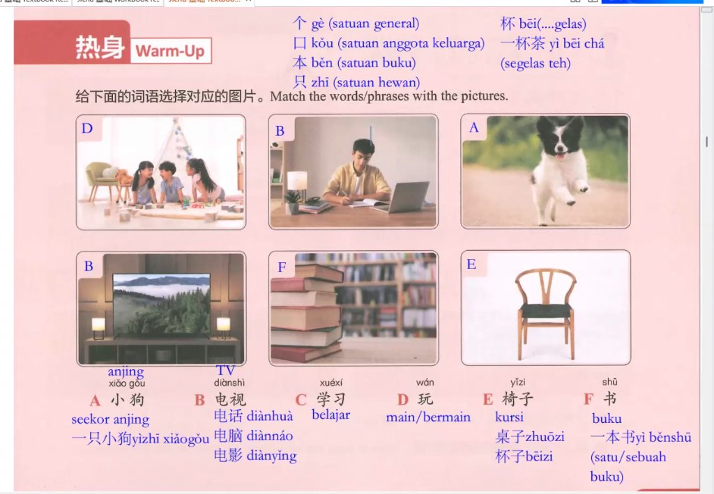

Latihan percakapan · 对话练习

Subjek + Waktu + 在 + Tempat + Kata Kerja + Objek
shang): Ketika “上” berfungsi sebagai kata penunjuk arah/posisi di belakang kata benda (Noun + 上), seperti 椅子上 (yǐzi shang - di atas kursi) atau 书上 (shū shang - di buku).shàng): Ketika menunjukkan posisi di bagian tinggi (contoh: 上方 shàngfāng = arah atas) atau menunjukkan urutan/waktu terdahulu (contoh: 上午 shàngwǔ = pagi).( 1 ) 第 (dì) + 数词 (Numeral)
( 2 ) 第 (dì) + 数词 (Numeral) + 量词 (Measure Word) + （名词 Noun）